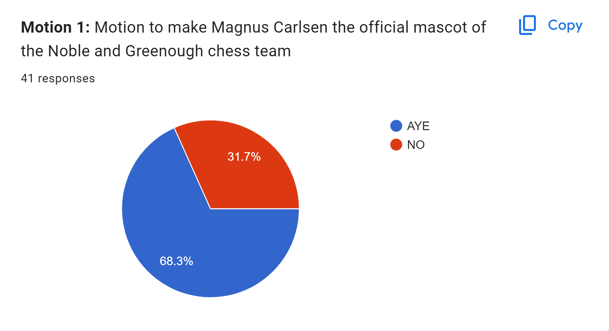
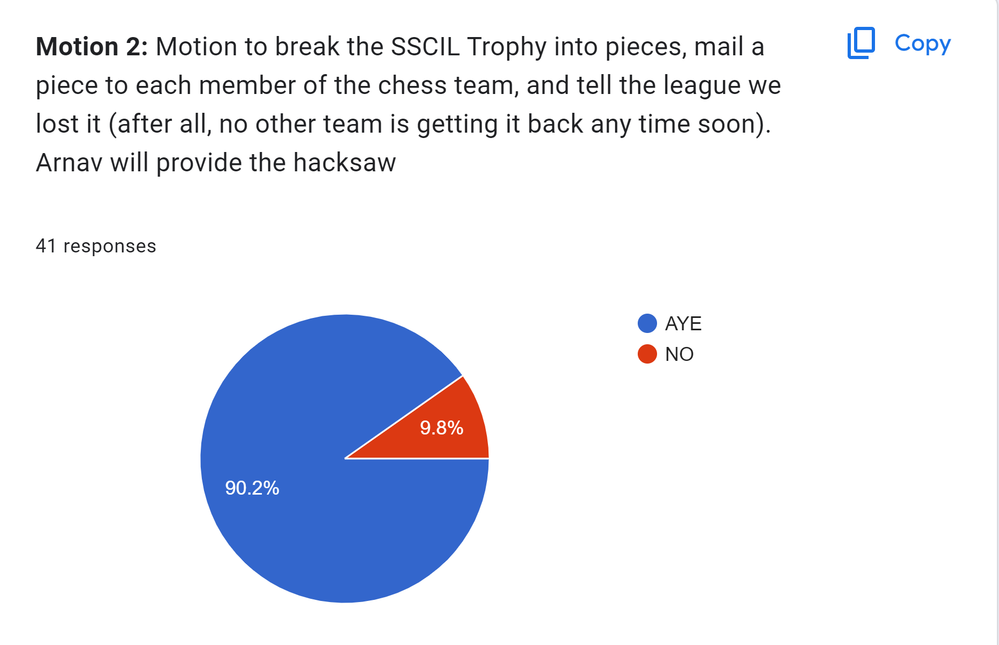
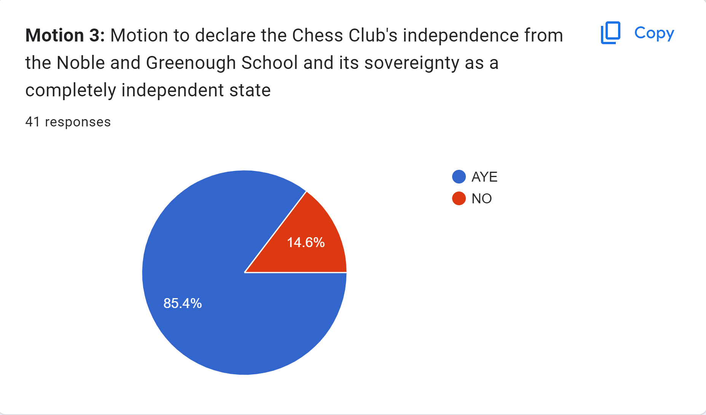
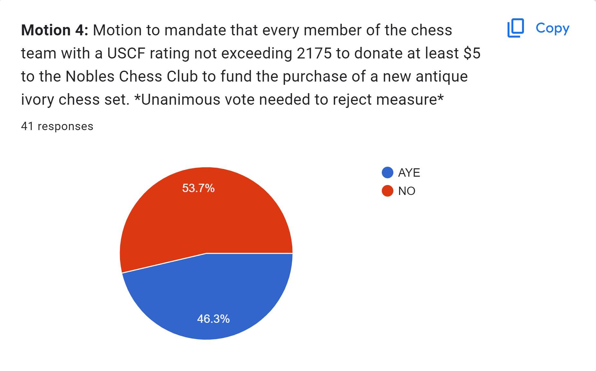
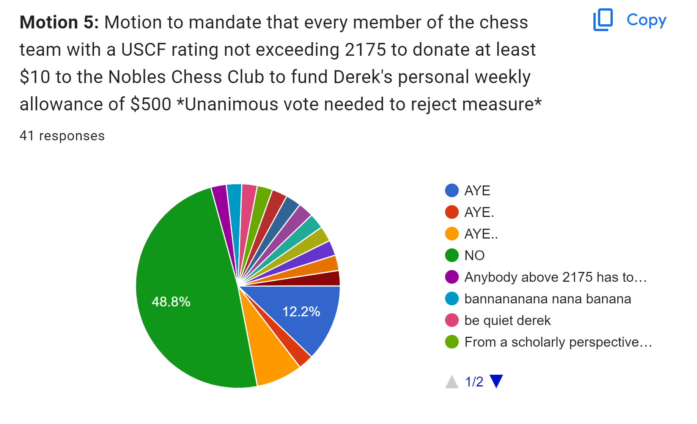

On April 1st, 2023, members of the Nobles Chess Club went to the polls to vote upon 5 transformative and life altering measures. On motion 1, the Magnus Mascot Act, the "Ayes" were 28 and the "Nays" were 13, so the motion passes. Construction on the mascot shall begin immediately, effective April 1st. On motion 2, the SSCIL Trophy fragmentation and redistribution act, the "Ayes" were 37 and the "Nays" were 4, so the "Ayes" have it. The trophy will be smashed and redistributed as soon as we acquire it. On motion 3, the Chess Club Independence Act, "Ayes" and 35 and the "Nays" are 6, so the motion is adopted. The Democratic Republic of Chess (DRC) is officially established and April 1st shall henceforth serve as our independence day. On motion 4, the Antique Ivory Chess Set Act, the "Ayes" are 19 and the "Nays" are 22. Without unanimous opposition, the motion is adopted. On motion 5, the Derek Jin Personal Allowance Act, the "Ayes" are 9, the "Nays" are 20, and the "Others" are 12. Without unanimous opposition, the motion is adopted.     